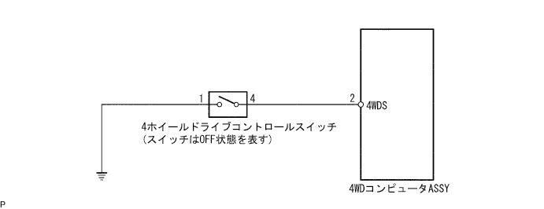
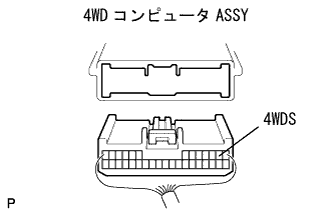
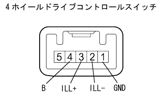

Active Torque Control 4WD System 4 Wheel Drive Control Switch Circuit |

| Step 1 | Inspect Wire Harness and Connector (4 Wheel Drive Control Switch - 4WD Computer Assembly) |
 |
for reference.Disconnect the 4WD computer assembly connector.
Using SST (Toyota electrical tester), measure the resistance between the 4WD computer assembly and body ground. (For Terminals of ECU, see)
| Tester Connection | Condition | Standard |
|---|---|---|
| 2 (4WDS) - Body ground | Switch ON | 1 Ω or less |
| 2 (4WDS) - Body ground | Switch OFF | 10k Ω or higher |
|
| ||||
| OK | ||
| ||
| Step 2 | Inspect 4 Wheel Drive Control Switch |
 |
Disconnect the 4 wheel drive control switch connector.
Using SST (Toyota electrical tester), measure the resistance between the terminals of the 4 wheel drive control switch.
| Tester Connection | Condition | Standard |
|---|---|---|
| 4(B) - 1(GND) | Switch ON | 1 Ω or less |
| 4(B) - 1(GND) | Switch OFF | 10k Ω or higher |
Illumination Inspection
Connect the battery positive (+) to terminal 3 (ILL+) and the negative (-) to terminal 2 (ILL-) of the 4 wheel drive control switch, and check that the illumination comes on.
|
| ||||
| OK | ||
| ||